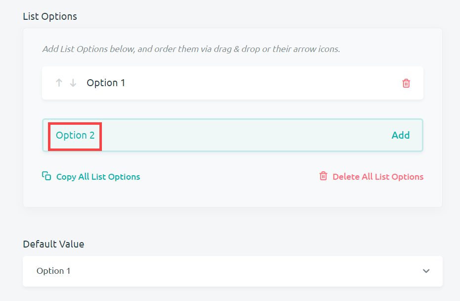
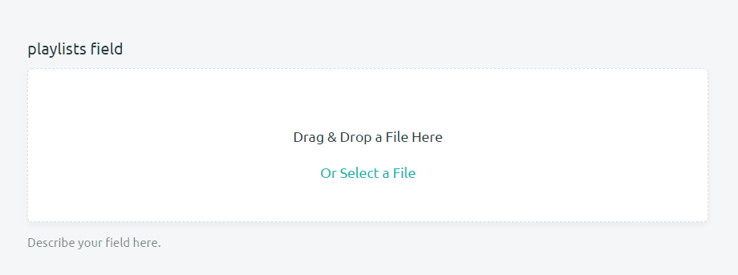

Understanding Field Types
Each form has to ability to add any number of different fields across multiple pages. This includes text, number, list, data, file and specialty fields. Understanding what these field types bring to the table will allow you to create spaces for data entry that are relevant to your digital repository. Creating a field is the first step towards understanding field types.
After choosing to create a field and selecting the Field Type drop-down menu, you'll find the field type options available. These options will determine what types of data are entered into a record. The headings below will discuss the field types by their category: text, number, list, data, file and specialty.
After selecting your field type, you can click on Show Advanced Field Options. This is where you will be able to view many of the options for customizing your fields discussed below.
Text Fields
Text field are fields in which you enter text. There are two types of text field: text field and rich text field.
Text
A text field allows users to enter any plain text into a record. This can include characters, numbers, and symbols from your keyboard. The advanced field options available include: a Default value, a Regex pattern and whether or not to make the field Multilined*.
-
Default: inputting a default value for a text field will create a value that is always present in that field when creating a record. This value can be deleted and replaced, but it will be initially present for every record containing this text field.
-
Regex: A Regex pattern allows you to customize how a text field is searched for within Kora. For instance, if a word has multiple ways of being spelled, you can specify the different ways that a text field may be entered: the regular expression seriali[sz]e matches both "serialise" and "serialize". There are much more complex regex expressions you can learn how to write, however.
-
Multilined?: The multilined option allows you to enter more than one line of plain text, by clicking the enter button. There is no set limit to the number of lines you can enter, and a scroll bar will appear if the lines appear out of the text field's view.
Rich Text
A rich text field allows you write text that can be stylized and edited with the CKE editor. There are numerous options available in this editor to manipulate text. Users will be able to italicize, bold, underline, and strikethrough their text. They can also insert tables and images headings, bulleted lists and numbered lists into their text. Users are then able to run spellchecker, insert links and change other aspects of their text. The user guide for the CKE editor can be found here(They do not have a user guide up and running yet). There are no advanced options available for this field besides the creation of a default value.
- Default: Default text can be entered into this field. The entered text will always be present in that field when creating a record. This value can be deleted and replaced, but will always be initially present for every record containing this * rich text field*.
Number Fields
Number fields allow you to enter numbers. Users may enter the numbers manually into this field using a keyboard. alternatively, users are able to use arrow keys or scroll with their mouse wheel to move the number value up or down by 1. There are two types of number fields: integer field and float field.
Integer
Integer fields take in whole numbers as their values. These are numbers without decimal points, and they can include negative numbers. If you attempt to enter a value that is not a whole number, then the value will not appear in the record. The advanced field options available include: a Default value, a Minimum Value, a Max Value and Unit of Measurement.
-
Default: A default number can be entered into this field. The entered number will always be present in that field when creating a record. This value can be deleted and replaced, but will always be initially present for every record containing this integer field.
-
Minimum Value: This specifies the lowest value that can be entered for this field. If a value is entered that is lower than this minimum value, Kora will not accept the minimum value. The record will either not be created, or it will shift to the minimum value. If a user is utilizing arrows or a mouse wheel, the value will stop changing at the specified minimum value.
-
Max Value: This specifies the highest value that can be entered for this field. If a value is entered that is higher than this Max value, Kora will not accept the maximum value. The record will either not be created, or shift to the maximum value. If a user is utilizing arrows or a mouse wheel, the value will stop changing at the specified max value.
-
Unit of Measurement: A unit of measurement can be specified for the integer value. Any plaintext value can be entered and will show up to the field name in parentheses when entering the record.
Float
Float fields can take in any real numbers as their value. These real numbers can include integers and negative numbers. The advanced field options are exactly the same as the previous section and include: a Default value, a Minimum Value, a Max Value and Unit of Measurement.
-
Default: A default number can be entered into this field. The entered number will always be present in that field when creating a record. This value can be deleted and replaced, but will always be initially present for every record containing this float field.
-
Minimum Value: This specifies the lowest value that can be entered for this field. If a value is entered that is lower than this minimum value, Kora will not accept the minimum value. The record will either not be created, or it will shift to the minimum value. If a user is utilizing arrows or a mouse wheel, the value will stop changing at the specified minimum value.
-
Max Value: This specifies the highest value that can be entered for this field. If a value is entered that is higher than this Max value, Kora will not accept the maximum value. The record will either not be created, or shift to the maximum value. If a user is utilizing arrows or a mouse wheel, the value will stop changing at the specified max value.
-
Unit of Measurement: A unit of measurement can be specified for the float value. Any plaintext value can be entered and will show up to the field name in parentheses when entering the record.
List Fields
Lists fields allow users to create lists of data or select list options from a controlled vocabulary. Users are also able to generate a list, or create a list of objects associated with other objects. Perhaps the greatest strength of lists is the ability to force users to enter in controlled vocabulary for data fields. Controlled vocabulary refers to the use of a specific terms to refer to your data. If you only have three possible options for a particular value, then that makes it easier to characterize and analyze the data. You don't have to worry about the particular differences in how people describe objects or spelling errors. The trade-off is a loss of nuance. It is up to form creators to decide which goals are important to them. Their are four types of list fields available: list field, multi-select list, generated list and combo list.
List
A list field is the most straightforward list option available. You may create a list of possible values (a.k.a a controlled vocabulary) from which users may select one value for the data field. A list field will appear as a dropdown menu from which you can select one of these values when creating a record. Many of the options mentioned here are available for all lists and so will refer back to this section. So, when creating any list you may follow these steps in the advanced options to create that list:
-
Under list options, enter your possible values in the green box labeled Type here and hit the enter key or "ADD" to add a new list option. From there hit enter or press the "ADD" button to add your value to the list.
-
Your new value ("option 1 in the image below") will be added to the list options above the green box you entered your data into. You can continue to add values in the bottom green box which will appear in the order created. You may also Copy All List Options or Delete All List Options. Copying list options will put all list options into your clipboard, separated by commas. Deleting all list options will delete all the values you have entered into a list. You will receive a notification asking you to confirm that you really do want to delete all your list options.

-
You are able to move your list options around by clicking on the arrows next to the list options you have created. Clicking on an up arrow will switch that list option with the option below it, while clicking on a down arrow will switch that list option with the option below it. You may also click and drag a list option to a different part of the list.
-
Once you have added all your list options, you are able to save your controlled vocabulary as preset for other lists by pressing the Create a New Value Preset button. You will have to give your list a name and decide if you want forms across your project to be able to use your preset list. You may also select Use a Value Preset for these List Options to select any preset lists that have been created and made available. You may also select from a selection of default preset lists made available across Kora which includes: Boolean, Country, Languages, and U.S States.
-
At the bottom of list options, you will see that you can specify default values for your list. For the list field type, you may only specify one default value. In other multi-select, generated, and combo lists, you are able to specify more than one value. The default value for any list can be changed by the person making the record, but the default value will always be initially chosen when creating a record.
Multi-Select List
A multi-select list field creates a list of possible values (a.k.a a controlled vocabulary) from which users may select multiple values for the data field. This field follows the same setup as a list field (see steps 1-5 for list field above), but the end result is the ability to select multiple list options from a single list.
- You may select list options from a *multi-select list by clicking them in the drop-down menu. You may also remove selected items by clicking the x next to the field option.
Generated List
A generated list enables users to create and edit a list while creating a record. Users enter their own list options as if they were creating their own list field. This means that there are steps to create a generated list in a record, and steps to create a generated list in a form.
-
The process of creating a generated list in a record is outlined in steps 1-3 of the list field section above. Users will enter, delete and rearrange their list options in the same way that list options are created when making a list field.
-
Creating a generated list field in a form provides you with similar advanced options as other lists (steps 1-5 in the list field above), but there are a couple of key differences.
- First, there is the ability to add a regex expression, which can modify how Kora searches for your field.
- Secondly, it is important to note that any list options that you add in the advanced options will not show in the generated list that appears when creating a record. That means no default values can be specified or already existing list options added. Users will always have to generate the list from scratch when using a generated list.
Combo List
A combo list field type allows users to select values from two different field types and associate those values with each other in one list. It is the only list field option that does not follow the steps outlined in the list field above. Instead, follow these steps to create a combo list:
-
In the advanced options of a combo list, you will find the boxes shown in the image below available. The two boxes on the left named Combo List Field Type allow you to select the field types you want for this list. You may select any field type except for File Fields. The boxes on the right named Combo List Field Name allow you to give names to those fields.
-
Here is an example setup in the advanced options. This combo list will use text and date fields to combine the names and birthdays of individuals into a single list. Note that you are unable to edit the advanced options of these individual fields.
-
You Combo List will appear empty when creating a record as shown below. To add paired values to this list, click on the Add New Value button.
-
The individual options for the field types you have selected will be available when adding a new value. In name and birthday example from the previous step, a text field is available for 'Name', while a date field is available for 'Birthday'. Click Create Combo Value to add the desired values to the list. You may add any number of combined values.
Date Fields
Date fields allow users to enter temporal data when creating records. There are three field types available for these purposes: Date, Date Time and Historical Date.
Date
The date field allows users to enter a month, day and year. The advanced field options available include: Default month, day and year; Date Format, Start Year, End Year and the ability to specify the current year as the start or end year.
-
Default: a default month, day and/or year can be chosen for the date field type. Default dates are changeable, but will appear initially every time a record using that date field is created.
-
Date Format: use this option to rearrange the order of how the month, date and year appear when making the record.
-
Start Year: this option allows you to specify the earliest year available for users to enter. Users will not be able to enter dates before the start year into records.
-
End Year: this option allows you to specify the latest year that is available for users to enter. Users will not be able to enter dates after this end year into records.
-
Use Current Year as Start Year: if you only want users to be able to enter recent dates, you can select the current year as the start year for dates to be entered.
-
Use Current Year as End Year: if you want users to be able to enter dates up to the current year, select this option to make dates up to this year available.
Date Time
The date time field type provides everything that the date field type provides, plus time. The Advanced options for a date time field also follow this same logic. Default hour, minutes and seconds are the only advanced option which differ for this field type and they are outlined in the image below. Check out the section on the date field type above to learn more about the other advanced options
- Default: the date time field type gives the additional option to specify a default hour, minute and second. Default times are changeable, but will appear initially every time a record using that date time field is created.
Historical date
A historical date field type provides everything that the date field type provides, plus the ability to add prefixes and calendar notation to the dates. The advanced options for this field type are similar to the date time field, except a few advanced options: Select Prefix(Optional), Select Calendar/Date Notation, Show Prefixes? and Show Calendar/Date Notation?. These advanced options unique to the historical date field type are outlined below. Check out the section on the date field type above to learn more about the other advanced options.
-
Select Prefix(Optional): prefixes are selected by clicking the circle to the left of their name. The prefixes available include circa, pre and post. Circa refers to approximate or estimated dates. Pre refers to times before the specified date. Post refers to times after the date. You may only select one prefix.
-
Select Calendar/Date Notation: calendar and date notation are selected by clicking the circle to the left of their name. CE refers to common era; BCE refers to before common era, BP refers to before present (oftentimes this means the year 1950 CE); and KYA years often refers to thousands of years before present. You must select one calendar/date notation.
-
Show Prefixes?: If you want your selected prefix to appear when creating and viewing records, then select 'yes' from the drop-down menu.
-
Show Calendar/Date Notation? if you want your selected notation to appear when creating and viewing records then select 'yes' from the drop-down menu.

File Fields
File Fields allow you to create fields were users can upload files to a record. This includes documents, images, audio, video and 3D models. The image below shows what a typical file field looks like. There will be a title, a space to upload your file, and a description below. The File Field Types are: Documents, Gallery, Playlist, Video and 3D-Model.

Documents
The documents file field creates a space for document files to be uploaded. Since there are multiple types of files that documents can come in, you must select the document file types that you want to upload. You can customize the types of files you want uploaded and how you want them uploaded with the advanced options available: Max File Size (kb); Max File Amount; and Allowed File Types (MIME):.
-
Max File Size (kb): allows you to determine the maximum size of a file that can be uploaded.
-
Max File Amount: allows you to determine the maximum number of files that you want uploaded with each record.
-
Allowed File Types (MIME):: this is were you will select the types of files that you want to accept for a document upload. You may want only .pdf or .png files to be uploaded. Due to the wide variety of formats that documents typically come in, no default values are selected for document uploads and there are a wide variety of file types available for selection. This differs from other file fields in because you must choose a document type for it to be possible to upload files.
Gallery
The gallery file field creates a data field which allows users to upload images. Standard file formats are already selected for this field and include: jpg, gif and png and bmp image files. The advanced options available are similar to other file fields: Max File Size (kb); Max File Amount; and Allowed File Types.
-
Max File Size (kb): allows you to determine the maximum size of a file that can be uploaded.
-
Max File Amount: allows you to determine the maximum number of files that you want uploaded with each record.
-
Allowed File Types:: the file types provided are already optimized for typical image file formats including: jpg, gif and png and bmp image files. These are the only file types you may choose from.

Playlist
The playlist file field creates a space for users to upload audio files when making a record. Standard file formats are already selected for this field and include: MP3 and WAV audio files. The advanced options available are similar to other file fields: Max File Size (kb); Max File Amount; and Allowed File Types.
-
Max File Size (kb): allows you to determine the maximum size of a file that can be uploaded.
-
Max File Amount: allows you to determine the maximum number of files that you want uploaded with each record.
-
Allowed File Types:: the file types provided are already optimized for typical audio file formats including: MP3 and WAV audio files. These are the only file types you may choose from.
Video
The video file field creates a space for users to upload video files when making a record. There is only one standard file formats selected for this field which is MP4. The advanced options available are similar to other file fields: Max File Size (kb); Max File Amount; and Allowed File Types.
-
Max File Size (kb): allows you to determine the maximum size of a file that can be uploaded.
-
Max File Amount: allows you to determine the maximum number of files that you want uploaded with each record.
-
Allowed File Types:: the MP4 file type provided is the only file format available for videos. This is the only file types you may choose from.
3D model
The 3D model file field creates a space for users to upload 3D models into a record. There are standard file formats already selected for 3D models which include: OBJ, STL, JPEG Texture, PNG Texture and other. The advanced options available are similar to other file fields, but include some notable differences: Max File Size (kb); Allowed File Types; Model Color; Background Color One; and Background Color Two.
-
Max File Size (kb): allows you to determine the maximum size of a file that can be uploaded.
-
Allowed File Types:: the file types provided are already optimized for typical 3D model file formats including: OBJ, STL, JPEG Texture, PNG Texture and other.
-
Model Color: allows you to choose the color of the 3D Model
-
Background Color One: allows you to choose the first background color of the model environment
-
Background Color Two: allows you to choose the second background color of the model environment.
Specialty Fields
There are a number of different Specialty fields which serve specific functions for form creators. These functions allow users to create true or false options, describe geographic location and associate records with other records. These field types are referred to respectively as:Boolean; Geolocator; and Associator fields.
Boolean
The boolean field allows. As you can see in the previous image, You are able to make a title and description for a boolean field, which the person entering data may check or uncheck by clicking on the circle. You may automatically have the boolean field selected by checking the default option in the advanced options of the boolean field you are creating or editing.

Geolocator
The geolocator field allows users to enter geographic data through the use of latitude/longitude (lat/long), and address data. When entering new geolocator data, users enter the name of the new location, what type of geographic data they are entering (lat/long or address) and then the actual data. This field provides three advanced options when customizing this field: Default Locations, Map Display and Displayed Data.
-
Default Locations: this advanced field option allows you to enter default locations for a geolocator field. You will enter the location name, location type and data in the same way as a new record. The image below shows the pop-up that appears for entering new locations into a geolocator field.

-
Map Display: This advanced option allows you to display a map with points using entered location data. The points will appear on an interactive map which will automatically zoom to fit all of your points. Viewing records with map display active will show this map when examining records. If map display is inactive then no interactive map will be available for locations entered using Geolocator data. Instead, the raw text for the name of the location, and it's location data will be displayed.
-
Displayed Data: If you choose not to display a map using the Map Display option, then Kora will display your data as text. There are two types of location data that you are able to display when viewing records: Lat Long and Address. Displaying Lat Long will display the coordinates of your location using latitude and longitude coordinates. Likewise, selecting Address will display the address of your locations. If a record provides latitude and longitude, Kora will still be able to look up an associated address to display if that is the option that is chosen. The opposite is also true.
Associator
An associator field creates connections between records. Let's say, for example, that you want to create a form that keeps track of people associated with a museum project. This could include supervisors, volunteers, archaeologists, etc. Individual records could be created with their names and roles. Now let's say you want to create another form for objects associated with this project. You could create records which include data on these objects and the people involved with the curation of those objects. This could potentially be a lot of data reentry, however. One solution Kora offers for this hypothetical problem is the ability to associate the object records from the one form with the people records from the other form.
When an association is created within a record, the associator field displays your selected, associated record as a clickable link within that original record. This link will bring you to the record page for that associated record. The possible association are extremely flexible, in that you are able to associate records with other records from the same form or even records from another project's form. In order to do this, however, you will need to give forms the ability to search each other through Form association permissions. What follows are directions for: creating association permissions between forms; setting up the search configurations for an associator field, and how to use an associator field.
Associator Permissions
Follow these steps to set up associator permissions:
-
First, you will want to navigate to the desired form that you want to associate other records with. From there you will have to select Association Permissions from either dropdown menu shown below.
-
This will bring you to the Form Associations Page which allows you to grant association access with other forms. If you have administrative access to the forms that you want to associate, select Create a New Form Association.
-
A new box will appear asking you Create a New Form Association. The dropdown menu will initially ask you to select a form. Forms will be displayed here from any project you have access to through a "project name - form name" format. Select the form you want to create an association with and click Create a New Form Association. Forms that are allowed to be associated with will be listed at the bottom of the Form Associations Page.
-
If you do not have administrative permissions to a form, you may select the Request Form Access tab. Clicking Request Form Access on that page will allow you to select a form, after which Kora will send an email to all administrators requesting access to form associations.
Association Search Configuration
Now that you have the correct association permissions set up for your form, you can create an association field that will be able to search records from other forms. In the directions below, we will be creating an associator field that is able to search for records through another form called "Form 2". These setup steps will work for any associator field:
-
First go to the advanced options for the associator when creating the field. There you will find the Association Search Configuration, which will have the forms that you are able to search through available to be checked off.
-
Once you have selected the form that you want this field to be able to associate with, you will have the option to select preview values. Preview values will show any values from the selected fields you choose when searching for records. If you do not select a preview value, then the internal Kora Identification (KID) will be the only value that is shown when searching for records with this associator. It is recommended that you choose a field such as "name", "id", etc. that will allow you to more easily identify what record you are looking at.
-
After your search configuration is set up, you can create a default value for the associator field. Go to the next section for directions on how to use an associator field.
How to Use an Associator Field
After setting up the permissions and search configurations for an associator field as outlined in the previous sections, you will now be able to associate records from your form with records from other desired forms. Follow these steps to associate records using an associator field:
-
When using an associator field, the first thing you must do is search for a record to associate with. You must search for records by entering key terms or a known KID (Kora Identification number) under Search Associations. In the image below, we search for "Jane Doe"
-
Results of your search will show up in the next section labeled Association Results. Results will show up as the KID separated from any preview values you have chosen (step 2 in search configuration). Because we selected a preview value to display a name, we are extra sure that this is the correct record for "Jane Doe". Click on the record(s) that you want to appear as associations.
-
Selected association will then appear in the Selected Associations section. You may continue to search for new records to associate by repeating steps 1 & 2. You may also remove selected associations by clicking on the x next to their text.